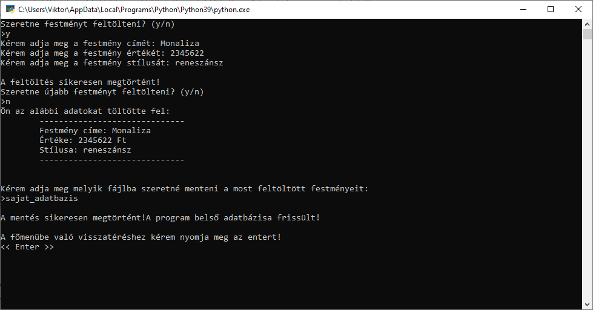

Festmények hozzáadása
Több részből tevődik össze ez a modul is. Nagyon fontos megjegyezzem igen zseniális műremekkel van dolgunk. Szépen kidolgozottan kerdezi meg a beviteli adatokat és adja vissza a végén milyen adatokat is adtunk meg. Valamit külön odafigyel arra is, hogy mi legyen az új adatbázis neve. Vagy éppen melyikhez tudjuk hozzá fűzni. Igen erre is képes! 